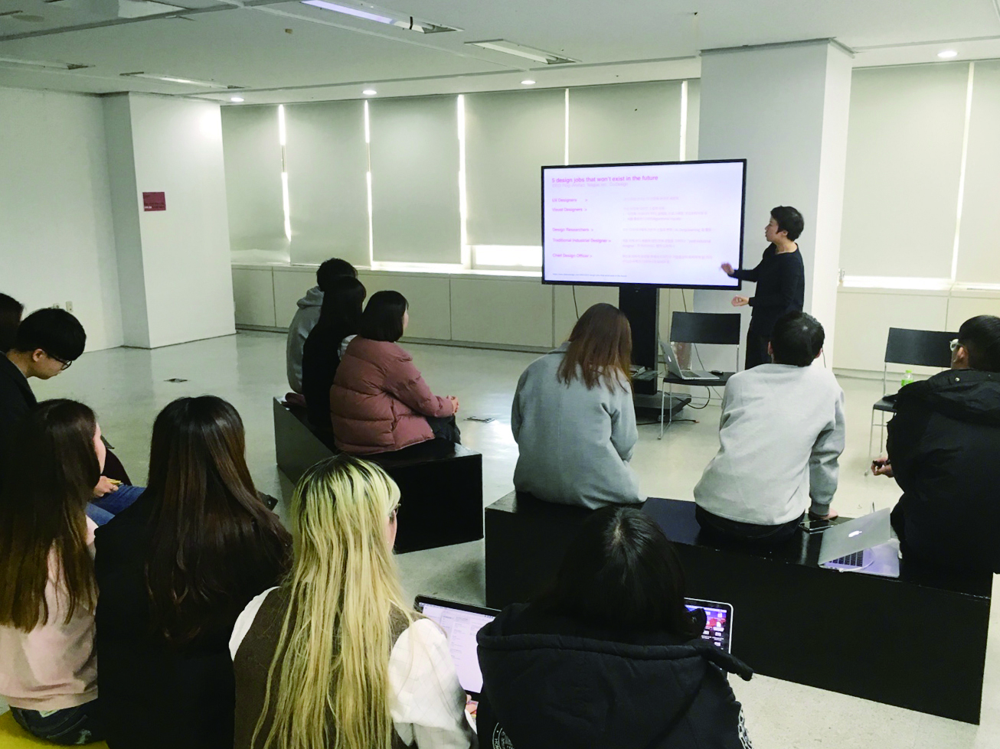
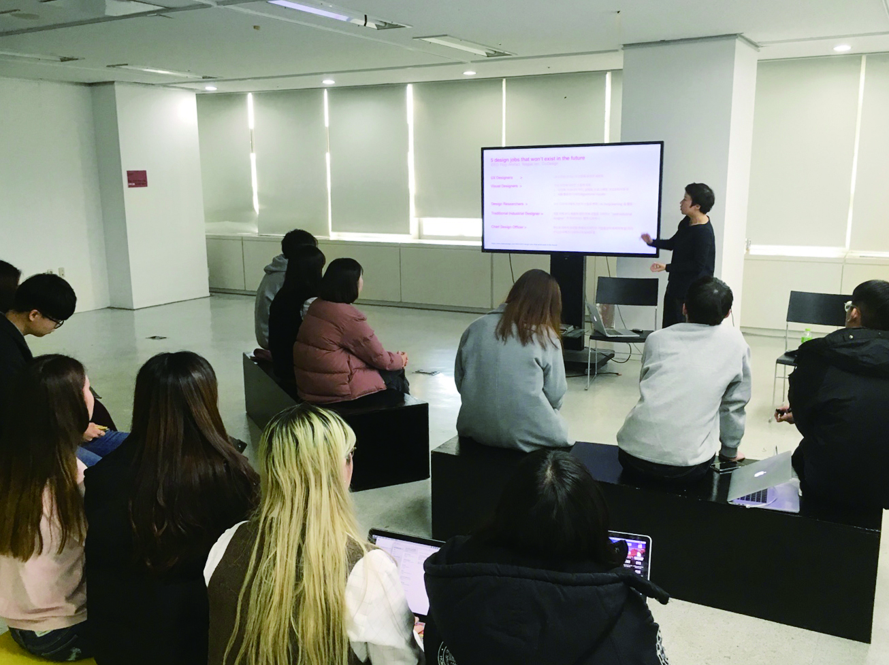
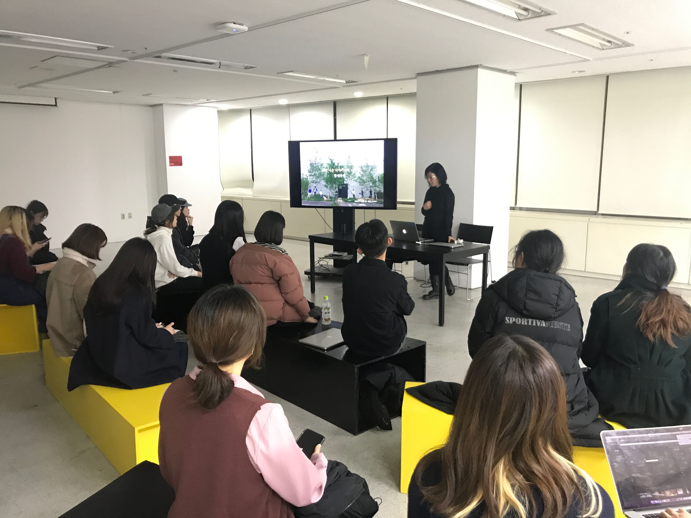
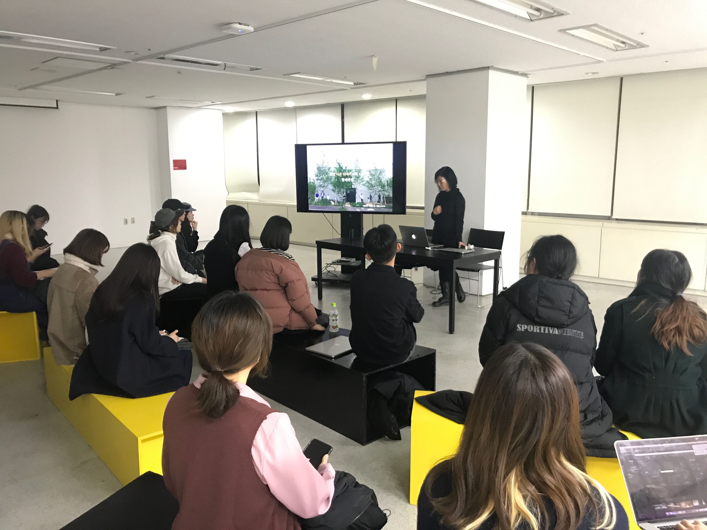

토크는 학과 교수님들께서 준비하신 프로그램으로, 다양한 주제들을 가지고 1시간가량 자유롭게 이야기하는 방식으로 진행되었다. 토크에는 시각디자인과 학과장님을 비롯해 다섯 분의 4학년 지도교수님들께서 참여하셨다.
알아두면 쓸데있는
ㅎㅇㅅㄷ 커리큘럼
김현석
2018 개편되는 홍익대학교 시각디자인과 커리큘럼의 변화를 알아보고 이를 통해 시각디자인과 교육과정이 어떻게 변화하였는지, 또 어떤 교육목표를 기반으로 커리큘럼이 구성되었는지 알아본다.

인간을 위한 디자인
윤재영
내 디자인은 누구를 위한, 무엇을 위한 디자인인가? 디자이너라면 한번쯤은 해봤을 법한 이 질문과 고민에 대해 이야기를 나누고자 한다.
Graduate School in 미쿸
전재운, 크리스로
This talk will be about some of the advantages, disadvantages and process of going to graduate school for design in the United States of America. Both Chris and Jae will be discussing this from both an American perspective and a Korean perspective. Please join if you are interested in attending school in America.
미래의 디자이너의 역할
이연준
10년 후 미래의 디자이너의 역할은 무엇일까?
 

디자인스튜디오 디자인
이나미
디자이너의 ‘삶.꿈.일’ 을 스스로 디자인하기 위한 최고의 프로젝트.
 
